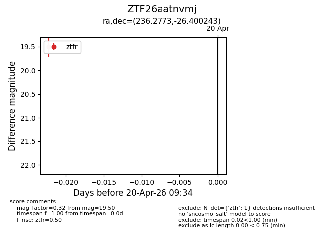
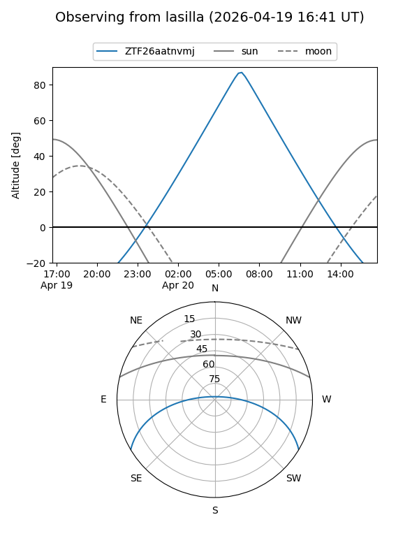
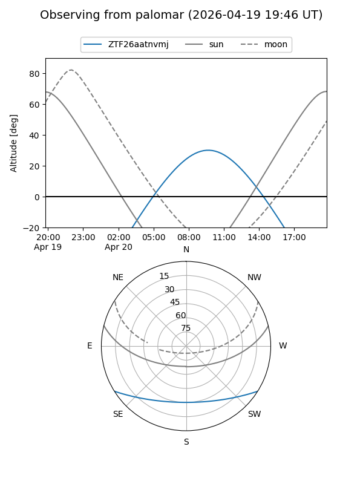

ZTF26aatnvmj
Target ZTF26aatnvmj at 2026-04-20 09:45
Aliases and brokers:
FINK: link
Lasair: link
ALeRCE: link
alt names
ZTF26aatnvmj (ztf,fink_ztf)
Coordinates:
equatorial (ra, dec) = 236.2773,-26.40024
equatorial (HMS+DMS) = 15:45:06.55,-26:24:00.87
galactic (l, b) = (344.5736,+22.10381)
Flags:
Photometry:
last ztfr=19.50
1 ztfr detections
Lightcurve

Visibility


Additional plots